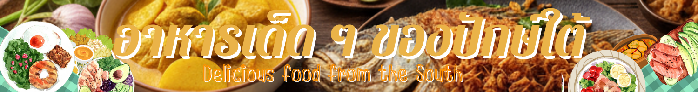
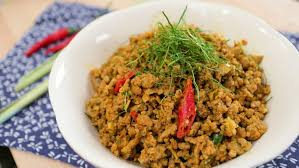
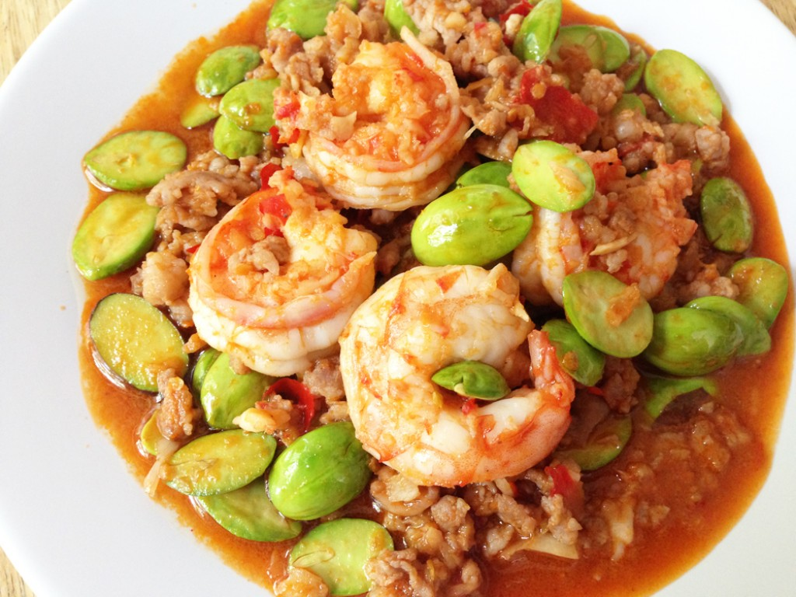

คั่วกลิ้งหมู

คั่วกลิ้งหมู อาหารใต้สุดฮอตที่ทุกคนรู้จักดี หอมกลิ่นน้ำพริกคั่วกลิ้ง ผัดรวมกับเนื้อหมูสับ ติดมันเล็ก ๆ สุดท้ายโรยใบมะกรูดซอย อูย… เห็นแล้วเปรี้ยวปากจริง ๆ
ส่วนผสม
หมูสับ
พริกแกงคั่วกลิ้ง
กะปิ
น้ำตาลปิ๊บ
ใบมะกรูดซอย
น้ำปลา
น้ำมันพืชสำหรับผัด
พริกไทยอ่อน 1 ช่อ
วิธีทำ
ตั้งกระทะใส่น้ำมันเล็กน้อย ใช้ไฟกลาง
ผัดพริกแกงคั่วกลิ้งจนหอม
ใส่หมูสับ ผัดจนสุกและแห้ง
ปรุงรสด้วยน้ำปลา ชิมตามชอบ
โรยใบมะกรูดซอย คลุกให้เข้ากัน แล้วยกเสิร์ฟ
หมูผัดกะปิ
คออาหารใต้คงต้องรู้จักเมนูหมูผัดกะปิเป็นอย่างดี ใครมีกะปิเหลือ ๆ ก็ลองดูจ้า จับไปผัดกับเครื่องหอม ๆ และหมูติดมันเบา ๆ เสิร์ฟกับข้าวสวยนี่สุดยอดเลย
ส่วนผสม
กะปิ 1 ช้อนโต๊ะ
กระเทียม 5 กลีบ
หอมแดงซอย 2-3 หัว
ตะไคร้ซอย 1/4 ถ้วย
พริกขี้หนูหั่น 2 เม็ด
สันคอหมูติดมัน
น้ำตาลปี๊บ หรือน้ำตาลทราย
ใบมะกรูดซอย
พริกชี้ฟ้าสีแดง
วิธีทำ
นำกะปิ กระเทียม หอมแดง ตะไคร้ และพริกขี้หนู ไปโขลกจนละเอียด เตรียมไว้
ใส่น้ำมันพืชลงในกระทะ ใส่ส่วนผสมที่โขลกไว้ลงผัดใช้ไฟอ่อน พอหอมก็ใส่เนื้อหมูลงไปผัดจนสุก
ปรุงรสด้วยน้ำตาลปี๊บ โรยใบมะกรูดซอยและพริกชี้ฟ้าหั่นเฉียงลงไป คลุกเคล้าให้เข้ากัน ตักใส่จาน พร้อมเสิร์ฟ
ผัดสะตอกุ้งสด

ผัดสะตอกุ้งสด อีกหนึ่งเมนูอาหารใต้เอาใจคนไม่กลัวกลิ่นฉุน สูตรนี้ใส่ทั้งหมูสับและกุ้ง ลองมโนตามกลิ่นกันดูนะคะ คงจะหอมจริง ๆ เลยล่ะ
ส่วนผสม
น้ำพริกแกง 4 ช้อนโต๊ะ
น้ำมันพืช (สำหรับผัด) 1 ช้อนโต๊ะ
กุ้งสด
หมูสับ
น้ำปลา
สะตอ
น้ำตาลปี๊บ หรือน้ำตาลทราย
วิธีทำ
ใส่น้ำมันพืชลงในกระทะ ใส่น้ำพริกแกงลงไปผัดจนหอม
ใส่หมูสับและกุ้งลงผัดจนสุก ปรุงรสด้วยน้ำตาลปี๊บและน้ำปลา
ใส่สะตอลงผัดจนสุกหอม ตักใส่จาน พร้อมเสิร์ฟ
แกงไตปลา
แกงไตปลารสเด็ดต้องตำรับภาคใต้เท่านั้น แต่จะใส่ปลาโอหรือปลาทูก็ตามชอบ เลือกใส่ผักสดได้แบบไม่ต้องยั้ง ทั้งถั่วฝักยาว ฟักทอง และมะเขือเปราะ สุดท้ายก็ใบมะกรูด ถ้าส่วนผสมพร้อมแล้วอย่ามัวรีรอ ลุย !
ส่วนผสม
ไตปลาอย่างดี 1 ขวด
น้ำ 1.5 ลิตร
น้ำพริกแกงเผ็ด 200 กรัม
น้ำมะขามเปียก (ปรุงรส)
ปลาโอย่าง 1 ตัว หรือปลาทูนึ่ง 5 ตัว (แกะเอาเฉพาะเนื้อ)
ใบมะกรูด (ฉีกก้านกลาง) 10 ใบ
น้ำตาลปี๊บ หรือน้ำตาลทราย
ผักสดตามชอบ เช่น หน่อไม้ไร่ ถั่วฝักยาว ฟักทอง มะเขือเปราะ หั่นเป็นชิ้นพอดีคำ อย่างละ 100 กรัม
วิธีทำ
ต้มไตปลาในหม้อ คนผสมจนละลาย ยกลงจากเตา กรองเอาแต่เฉพาะน้ำไตปลา เตรียมไว้
ใส่น้ำลงในหม้อ ใส่น้ำพริกแกงเผ็ดลงคนผสมจนละลาย นำขึ้นตั้งไฟแรง ต้มจนเดือด จากนั้นใส่ไตปลาลงต้ม คนผสมให้เข้ากัน ปรุงรสด้วยน้ำมะขามเปียก และน้ำตาลทราย ชิมรสตามชอบ
ใส่เนื้อปลาที่แกะเตรียมไว้ลงต้มจนเดือด ชิมรส จากนั้นใส่ผักที่หั่นเตรียมไว้และใบมะกรูดลงต้มจนสุก ยกลงจากเตา ตักใส่ถ้วย พร้อมเสิร์ฟ